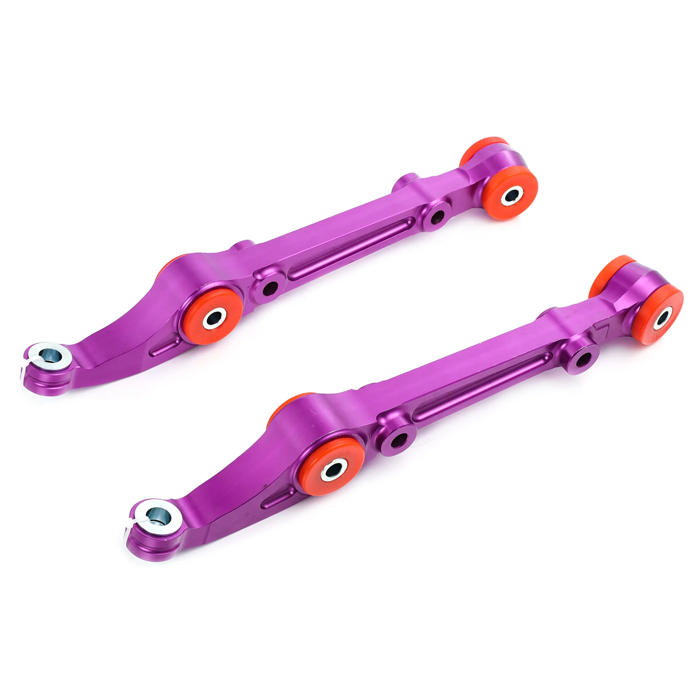

1 / 8FAPO Front Lower wahaczs Do Honda Civic EG/EH/EJ 1992-1995 Integra DC2 1994-2001 FZ042640
Zastosowanie: Acura Integra 3. generacji Type R DC2 (1994-2001) Honda Civic 5. generacji EG/EH/EJ1/EJ2 (1992-1995) Honda Del Sol EG (1993-1997) Cechy produktu: Obrabiane CNC z wysokiej jakości kęsów aluminium T-6061 z anodowanym wykończeniem zapewniającym doskonałą wytrzymałość i trwałość. Bezpośrednio przykręcany element zamienny; nie są wymagane żadne modyfikacje. Pomaga usztywnić tylne zawieszenie pojazdu, zapewn…
Application: Acura Integra 3rd Gen Type R DC2 (1994-2001) Honda Civic 5th Gen EG/EH/EJ1/EJ2 (1992-1995) Honda Del Sol EG (1993-1997) Features: CNC-machined from high quality T-6061 billet aluminum with an anodized finish for superior strength and durability. Direct bolt-on replacement item; no modifications required. Helps stiffen the rear-end suspension of your vehicle to provide a better steering response. Improves suspension, drivability, and supports better overall handling and performance. Kit Includes: 2 PCS of Front Lower Control Arms Warranty: 1 year warranty for any manufacture defect.
999,99 PLN
Opis produktu
Zastosowanie:
- Acura Integra 3. generacji Type R DC2 (1994-2001)
- Honda Civic 5. generacji EG/EH/EJ1/EJ2 (1992-1995)
- Honda Del Sol EG (1993-1997)
Cechy produktu:
- Obrabiane CNC z wysokiej jakości kęsów aluminium T-6061 z anodowanym wykończeniem zapewniającym doskonałą wytrzymałość i trwałość.
- Bezpośrednio przykręcany element zamienny; nie są wymagane żadne modyfikacje.
- Pomaga usztywnić tylne zawieszenie pojazdu, zapewniając lepszą reakcję układu kierowniczego.
- Poprawia zawieszenie, właściwości jezdne i zapewnia lepsze ogólne prowadzenie i osiągi.
Zestaw zawiera:
- 2 sztuki przednich dolnych wahaczy
Gwarancja:
- 1 rok gwarancji na wszelkie wady produkcyjne.
Application:
- Acura Integra 3rd Gen Type R DC2 (1994-2001)
- Honda Civic 5th Gen EG/EH/EJ1/EJ2 (1992-1995)
- Honda Del Sol EG (1993-1997)
Features:
- CNC-machined from high quality T-6061 billet aluminum with an anodized finish for superior strength and durability.
- Direct bolt-on replacement item; no modifications required.
- Helps stiffen the rear-end suspension of your vehicle to provide a better steering response.
- Improves suspension, drivability, and supports better overall handling and performance.
Kit Includes:
- 2 PCS of Front Lower Control Arms
Warranty:
- 1 year warranty for any manufacture defect.
FAPO Polska
Ten produkt obsługujemy lokalnie
Autoryzowana obsługa
FAPO Polska prowadzi katalog, kontakt i zamówienia bez odsyłania klienta do zewnętrznych sklepów.
Dobór po aucie
Sprawdzamy dopasowanie produktu do pojazdu, rocznika i wersji przed finalizacją zamówienia.
Wsparcie po zakupie
Masz kontakt w Polsce w sprawach zamówień, wysyłki, gwarancji i zwrotów.